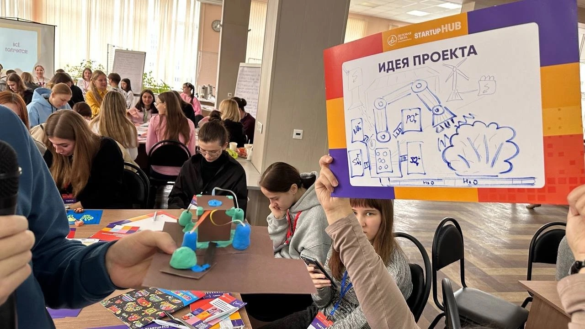
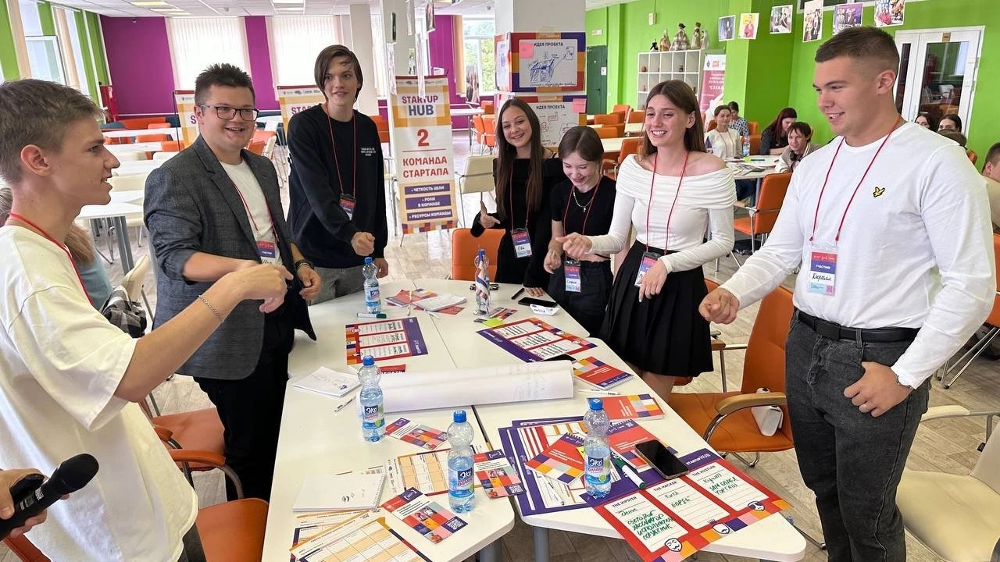
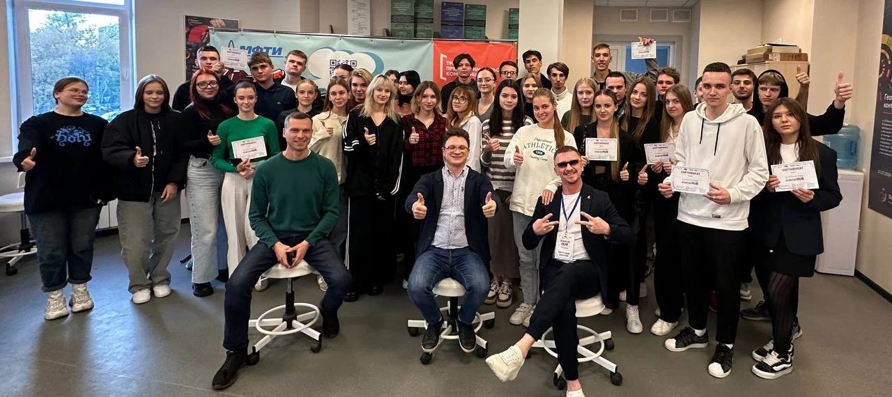

Хронология практики с февраля по сентябрь 2026 года.
Старт: команда и идея «Филина»
Команда по проектной деятельности выбрала идею сервиса подбора преподавателя. Я взял на себя исследование аудитории. Создал репозиторий по шаблону практики, настроил Git, изучил структуру папок и синтаксис Markdown.
GitИдея
Анкета и гипотезы
Сформулировали гипотезу: студентам важен не только предмет и цена, но и стиль преподавателя — строгий или мягкий. Составил анкету из 8 вопросов в Яндекс Формах и проверил её на пяти одногруппниках, после чего переписал два непонятных вопроса.
Исследование
Опрос 64 студентов и первые цифры
Разослал анкету в чаты потоков 1–2 курсов. Собрано 64 ответа. 63% тех, кто занимался с репетитором, сталкивались с неподходящим стилем преподавания — гипотеза подтвердилась. Результаты оформлены на странице «Исследование».
Участвовал в программе STARTUP HUB (ООО «Деловая сфера», МФТИ). На тренингах прошли генерацию идеи проекта, формирование команды стартапа, MVP и бизнес-модель. Полученные знания пригодились при описании ценности «Филина» для студентов и преподавателей. Получил сертификат участника.
ПартнёрСертификат

Карточка «Идея проекта»

Тренинг «Команда стартапа»

Участники с сертификатами
Алгоритм подбора
По результатам опроса предложил четыре критерия и веса: стиль 0,35, рейтинг 0,30, цена 0,20, формат 0,15. Реализовал прототип на JavaScript с байесовским сглаживанием рейтинга, чтобы новые преподаватели с парой отзывов не оказывались сразу наверху.
JavaScriptАлгоритм
Сайт по тематике проекта и отчёт
По замечаниям руководителя практики переделал сайт полностью под тематику проекта «Филин»: 8 страниц, демо-подбор, диаграммы опроса, журнал и ресурсы. Опубликовал сайт на GitHub Pages, добавил в отчёт скриншоты и ссылки на репозиторий.